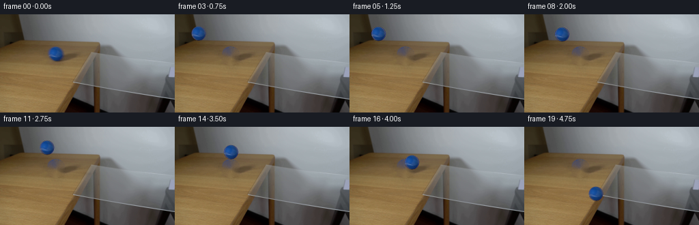
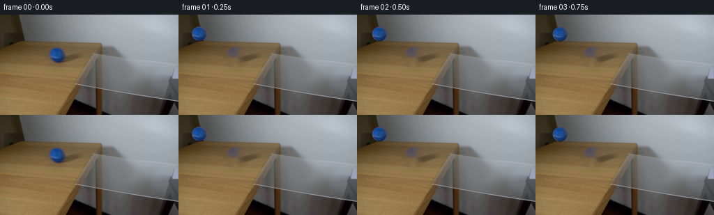

← 本轮 smoke 总览traex/DeepSeek-V4.1-Flash · 0027
text · 256×144 · 4.0 FPS · 20 帧 · 状态 complete · 输出 tokens 50161
原始任务Static locked-off single-shot with fixed frame throughout filmed with constant framerate in real-time. The scene shows a realistic scientific demonstration. The scene only contains the described setup and actions. A piece of clear glass resting on the edge of a light-colored wooden table against a plain white wall. The blue tennis ball rolls from the wooden table over the glass.
当前保存结果
已保存候选与代码修改
这里按时间展示外部捕获的候选，每份均可单独播放。保存新版本不等于完成视觉检查；下方工具证据记录实际看过的图。
候选 01 · 2026-11-08T22:04:43.261991+00:00 · 点开播放与检查图
inspection.png

transition_check.png

代码变化
--- 上一保存版本
+++ 本次保存版本
@@ -0,0 +1,239 @@
+from pathlib import Path
+
+import cv2
+import numpy as np
+from PIL import Image
+
+import artifact_io
+
+
+CASE_DIR = Path(__file__).resolve().parent
+WIDTH = 256
+HEIGHT = 144
+FRAMES = 20
+FPS = 4
+
+
+def _smoothstep(edge0, edge1, value):
+ t = np.clip((value - edge0) / (edge1 - edge0), 0.0, 1.0)
+ return t * t * (3.0 - 2.0 * t)
+
+
+def _extract_ball(source, clean_plate, center=(81.5, 57.5), radius=10.65):
+ """Unmix the antialiased sphere from its original wooden background."""
+ margin = 13
+ cx, cy = center
+ x0 = int(np.floor(cx - margin))
+ y0 = int(np.floor(cy - margin))
+ x1 = int(np.ceil(cx + margin))
+ y1 = int(np.ceil(cy + margin))
+
+ yy, xx = np.mgrid[y0:y1, x0:x1].astype(np.float64)
+ distance = np.hypot(xx - cx, yy - cy)
+ alpha = 1.0 - _smoothstep(radius - 0.9, radius + 0.35, distance)
+
+ observed = source[y0:y1, x0:x1].astype(np.float64)
+ old_background = clean_plate[y0:y1, x0:x1].astype(np.float64)
+ safe_alpha = np.maximum(alpha, 0.08)[..., None]
+ foreground = (observed - (1.0 - alpha[..., None]) * old_background) / safe_alpha
+ foreground = np.clip(foreground, 0.0, 255.0)
+ foreground[alpha < 0.01] = 0.0
+ return foreground.astype(np.float32), alpha.astype(np.float32), (x0, y0)
+
+
+def _make_clean_plate(source):
+ """Remove the source ball and its small contact shadow."""
+ mask = np.zeros((HEIGHT, WIDTH), dtype=np.uint8)
+ cv2.ellipse(mask, (82, 61), (12, 13), 0, 0, 360, 255, -1)
+ # Include the small warm/dark contact patch below the sphere.
+ cv2.ellipse(mask, (84, 69), (11, 3), -8, 0, 360, 255, -1)
+ clean = cv2.inpaint(source, mask, 4, cv2.INPAINT_TELEA)
+
+ # Match the grain immediately around the patch instead of leaving a
+ # conspicuously smooth inpaint island.
+ rng = np.random.default_rng(27)
+ noise = rng.normal(0.0, 0.9, (HEIGHT, WIDTH))
+ grain = cv2.GaussianBlur(noise, (0, 0), 0.55)
+ clean_float = clean.astype(np.float32)
+ soft_mask = cv2.GaussianBlur(mask.astype(np.float32) / 255.0, (0, 0), 2.1)
+ clean_float += grain[:, :, None] * soft_mask[:, :, None] * 1.8
+ return np.clip(clean_float, 0, 255).astype(np.uint8)
+
+
+def _ball_track():
+ # Constant rolling speed, then a short accelerating fall over the glass.
+ x = np.array(
+ [
+ 81.5,
+ 83.5,
+ 86.0,
+ 89.0,
+ 92.5,
+ 96.5,
+ 100.5,
+ 105.0,
+ 109.5,
+ 114.0,
+ 118.5,
+ 123.0,
+ 127.5,
+ 132.0,
+ 136.5,
+ 141.0,
+ 145.5,
+ 150.0,
+ 154.5,
+ 159.0,
+ ],
+ dtype=np.float64,
+ )
+ y = np.array(
+ [
+ 57.5,
+ 57.6,
+ 57.8,
+ 58.0,
+ 58.2,
+ 58.5,
+ 58.7,
+ 59.0,
+ 59.3,
+ 59.6,
+ 60.0,
+ 60.4,
+ 61.0,
+ 63.0,
+ 67.0,
+ 73.0,
+ 82.0,
+ 94.0,
+ 110.0,
+ 128.0,
+ ],
+ dtype=np.float64,
+ )
+ return x, y
+
+
+def _composite_sprite(canvas, foreground, alpha, center, anchor):
+ cx, cy = center
+ x0 = int(np.floor(cx - anchor[0]))
+ y0 = int(np.floor(cy - anchor[1]))
+ fx = cx - anchor[0] - x0
+ fy = cy - anchor[1] - y0
+
+ transform = np.array([[1.0, 0.0, fx], [0.0, 1.0, fy]], dtype=np.float32)
+ h, w = alpha.shape
+ warped_rgb = cv2.warpAffine(
+ foreground,
+ transform,
+ (w, h),
+ flags=cv2.INTER_CUBIC,
+ borderMode=cv2.BORDER_CONSTANT,
+ borderValue=0,
+ )
+ warped_alpha = cv2.warpAffine(
+ alpha,
+ transform,
+ (w, h),
+ flags=cv2.INTER_CUBIC,
+ borderMode=cv2.BORDER_CONSTANT,
+ borderValue=0,
+ )
+
+ canvas_h, canvas_w = canvas.shape[:2]
+ sx0 = max(0, x0)
+ sy0 = max(0, y0)
+ sx1 = min(canvas_w, x0 + w)
+ sy1 = min(canvas_h, y0 + h)
+ dx0 = sx0 - x0
+ dy0 = sy0 - y0
+ dx1 = dx0 + (sx1 - sx0)
+ dy1 = dy0 + (sy1 - sy0)
+ if sx1 <= sx0 or sy1 <= sy0:
+ return
+
+ rgb = warped_rgb[dy0:dy1, dx0:dx1]
+ a = warped_alpha[dy0:dy1, dx0:dx1, None]
+ region = canvas[sy0:sy1, sx0:sx1].astype(np.float32)
+ canvas[sy0:sy1, sx0:sx1] = np.clip(rgb * a + region * (1.0 - a), 0, 255).astype(
+ np.uint8
+ )
+
+
+def _soft_shadow(canvas, center, strength, radii=(11.0, 3.0)):
+ """Multiply a soft elliptical contact shadow into the plate."""
+ cx, cy = center
+ rx, ry = radii
+ x0 = max(0, int(np.floor(cx - 2.5 * rx)))
+ y0 = max(0, int(np.floor(cy - 2.5 * ry)))
+ x1 = min(WIDTH, int(np.ceil(cx + 2.5 * rx)))
+ y1 = min(HEIGHT, int(np.ceil(cy + 2.5 * ry)))
+ if x1 <= x0 or y1 <= y0:
+ return
+
+ yy, xx = np.mgrid[y0:y1, x0:x1].astype(np.float64)
+ q = ((xx - cx) / rx) ** 2 + ((yy - cy) / ry) ** 2
+ mask = np.exp(-1.8 * q)
+ mask *= _smoothstep(2.8, 0.2, q)
+ region = canvas[y0:y1, x0:x1].astype(np.float32)
+ tint = np.array([0.72, 0.69, 0.70], dtype=np.float32)
+ shadowed = region * tint
+ a = (strength * mask)[:, :, None]
+ canvas[y0:y1, x0:x1] = np.clip(region * (1.0 - a) + shadowed * a, 0, 255).astype(
+ np.uint8
+ )
+
+
+def generate():
+ source = np.asarray(Image.open(CASE_DIR / "first_frame.png").convert("RGB"))
+ assert source.shape == (HEIGHT, WIDTH, 3)
+
+ clean_plate = _make_clean_plate(source)
+ foreground, alpha, anchor = _extract_ball(source, clean_plate)
+ xs, ys = _ball_track()
+
+ frames = np.empty((FRAMES, HEIGHT, WIDTH, 3), dtype=np.uint8)
+ frames[0] = source
+
+ for index in range(1, FRAMES):
+ canvas = clean_plate.copy()
+ cx, cy = xs[index], ys[index]
+
+ # Contact shadow while the ball is still supported by the table.
+ if index <= 12:
+ _soft_shadow(canvas, (cx + 1.8, 68.0 + 0.18 * (cy - 57.5)), 0.27)
+ else:
+ # A restrained airborne shadow fades as the ball clears the table.
+ fade = max(0.0, 1.0 - (index - 12) / 5.0)
+ if fade > 0.0:
+ _soft_shadow(canvas, (cx - 1.0, 70.0), 0.13 * fade, (9.0, 2.4))
+
+ _composite_sprite(canvas, foreground, alpha, (cx, cy), anchor)
+
+ # A subtle cool rim keeps the clear glass legible as the ball passes it.
+ if index >= 14:
+ yy, xx = np.mgrid[0:HEIGHT, 0:WIDTH]
+ rim = (
+ (np.abs(xx - 145.0) < 0.65)
+ & (yy > 98)
+ & (yy < 143)
+ & (np.abs(xx - (cx - 4.0)) < 20.0)
+ )
+ lift = (0.035 * 255 * np.exp(-((yy - 118.0) / 25.0) ** 2)).astype(
+ np.float32
+ )
+ region = canvas.astype(np.float32)
+ region[rim, 2] += lift[rim]
+ region[rim, 1] += 0.45 * lift[rim]
+ canvas = np.clip(region, 0, 255).astype(np.uint8)
+
+ frames[index] = canvas
+
+ assert np.array_equal(frames[0], source)
+ artifact_io.save(frames, CASE_DIR)
+ return frames
+
+
+if __name__ == "__main__":
+ generate()
可观测工具行为
命令 1 · 2026-11-08T21:57:47.761449+00:00/bin/bash -c "pwd && rg --files -g '"'!*.mp4'"' -g '"'!*.gif'"' | sort"
exit 0 命令 2 · 2026-11-08T21:57:47.878761+00:00/bin/bash -c "sed -n '1,240p' prompt.txt"
exit 0 命令 3 · 2026-11-08T21:57:48.098305+00:00/bin/bash -c "sed -n '1,280p' GENERATION_RULES.md"
exit 0 命令 4 · 2026-11-08T21:57:48.283567+00:00/bin/bash -c "file first_frame.png && identify -verbose first_frame.png | sed -n '1,100p'"
exit 127 命令 5 · 2026-11-08T21:57:57.038316+00:00/bin/bash -c "sed -n '1,240p' artifact_io.py"
exit 0 命令 6 · 2026-11-08T21:57:57.742297+00:00/bin/bash -c "python - <<'PY'
from PIL import Image
import numpy as np
im=Image.open('first_frame.png').convert('RGB')
a=np.asarray(im)
print(im.size, a.shape, a.dtype)
print('global mean', a.mean((0,1)), 'min',a.min((0,1)), 'max',a.max((0,1)))
# row/column summaries every 8/16
for y in range(0,a.shape[0],8):
row=a[y]
print(f'y={y:3d} mean={row.mean(0).round(1)} min={row.min(0)} max={row.max(0)}')
PY"exit 0 命令 7 · 2026-11-08T21:57:57.983048+00:00/bin/bash -c "python - <<'PY'
from PIL import Image
import numpy as np
im=Image.open('first_frame.png').convert('RGB')
a=np.asarray(im)
# quantized dominant colors
q=(a//16)*16
u,c=np.unique(q.reshape(-1,3),axis=0,return_counts=True)
ix=np.argsort(c)[-25:][::-1]
for k in ix: print(tuple(u[k]), int(c[k]))
PY"exit 0 命令 8 · 2026-11-08T21:58:05.171338+00:00/bin/bash -c "python - <<'PY'
from PIL import Image
import numpy as np
A=np.asarray(Image.open('first_frame.png').convert('RGB')).astype(float)
# print 128x72 ascii using luminance, color deviation
chars=' .,:;irsXA253hMHGS#9B&@'
for y in range(0,144,2):
line=''
for x in range(0,256,2):
b=A[y:y+2,x:x+2].mean(0)
lum=.2126*b[0]+.7152*b[1]+.0722*b[2]
line += chars[min(len(chars)-1,int(lum/256*len(chars)))]
print(line)
PY"exit 1 命令 9 · 2026-11-08T21:58:09.419139+00:00/bin/bash -c "python - <<'PY'
from PIL import Image
import numpy as np
A=np.asarray(Image.open('first_frame.png').convert('RGB')).astype(float)
chars=' .,:;irsXA253hMHGS#9B&@'
for y in range(0,144,2):
line=''
for x in range(0,256,2):
b=A[y:y+2,x:x+2].mean((0,1))
lum=.2126*b[0]+.7152*b[1]+.0722*b[2]
line += chars[min(len(chars)-1,int(lum/256*len(chars)))]
print(line)
PY"exit 0 命令 10 · 2026-11-08T21:58:15.585214+00:00/bin/bash -c "python - <<'PY'
from PIL import Image
import numpy as np
A=np.asarray(Image.open('first_frame.png').convert('RGB')).astype(int)
R,G,B=A[:,:,0],A[:,:,1],A[:,:,2]
masks={
'blue_strong':(B>R+25)&(B>G+10)&(B>80),
'blue_any':(B>R+15)&(B>G+5),
'greenish':(G>R+20)&(G>B+10),
'dark':(A.mean(2)<55),
'warm_bright':(R>110)&(R>G+15)&(G>B+15),
'bright':(A.mean(2)>145),
}
for name,m in masks.items():
ys,xs=np.where(m)
print(name, len(xs), ('bbox',xs.min(),ys.min(),xs.max(),ys.max()) if len(xs) else None, 'mean',A[m].mean(0) if len(xs) else None)
# bins coarse
if len(xs):
H=np.zeros((9,16),int)
for x,y in zip(xs,ys): H[y*9//144,x*16//256]+=1
print(H)
PY"exit 0 命令 11 · 2026-11-08T21:58:23.209004+00:00/bin/bash -c "python - <<'PY'
from PIL import Image
import numpy as np
A=np.asarray(Image.open('first_frame.png').convert('RGB')).astype(float)
# 32x18 block medians
for gy in range(18):
row=[]
for gx in range(32):
b=A[gy*8:(gy+1)*8,gx*8:(gx+1)*8]
c=np.median(b.reshape(-1,3),0).astype(int)
row.append('#%02x%02x%02x'%tuple(c))
print(f'{gy*8:3d}', ' '.join(row))
PY"exit 0 命令 12 · 2026-11-08T21:58:31.523594+00:00/bin/bash -c "python - <<'PY'
from PIL import Image
import numpy as np
from scipy import ndimage
A=np.asarray(Image.open('first_frame.png').convert('RGB')).astype(int)
R,G,B=A[:,:,0],A[:,:,1],A[:,:,2]
for name,m in [('strong',(B>R+25)&(B>G+10)&(B>80)),('mod',(B>R+18)&(B>G+8)&(B>65))]:
lab,n=ndimage.label(m)
print(name,n)
for i in range(1,n+1):
ys,xs=np.where(lab==i)
if len(xs)>2: print(len(xs),(xs.min(),ys.min(),xs.max(),ys.max()),A[ys,xs].mean(0).round(1))
PY"exit 0 命令 13 · 2026-11-08T21:58:36.266152+00:00/bin/bash -c "python - <<'PY'
from PIL import Image
import numpy as np
A=np.asarray(Image.open('first_frame.png').convert('RGB'))
# crop ball pixels exact 62..101 x 40..75 print color and ascii labels by nearest known categories
for y in range(38,77):
s=''
for x in range(62,102):
r,g,b=A[y,x]
if b>r+25 and b>g+10: ch='B'
elif b>r+12 and b>g+3: ch='b'
elif r>g+12 and g>b+10: ch='w'
elif max(r,g,b)<60: ch='#'
elif max(r,g,b)<95: ch='d'
elif max(r,g,b)>150: ch='.'
else: ch=','
s+=ch
print(f'{y:3d} {s}')
print('center color samples')
for y in [48,52,56,60,64,68]:
print(y,[tuple(A[y,x]) for x in [70,74,78,82,86,90]])
PY"exit 0 命令 14 · 2026-11-08T21:58:41.267953+00:00/bin/bash -c "python - <<'PY'
from PIL import Image
import numpy as np
A=np.asarray(Image.open('first_frame.png').convert('RGB')).astype(int)
# inspect ROI 20..220, 85..143 via nearest block avg chars and color category
chars=' .:-=+*#%@'
for y in range(88,144,2):
line=''
for x in range(0,256,2):
b=A[y:y+2,x:x+2].mean((0,1)); lum=b.mean()
line+=chars[min(9,int(lum/18))]
print(f'{y:3d}',line)
print('Columns x=80..160, rows 90..140 exact category')
for y in range(90,142,2):
s=''
for x in range(70,171,2):
r,g,bb=A[y:y+2,x:x+2].mean((0,1))
if max(r,g,bb)<45: ch='#'
elif r>g+18 and g>bb+12: ch='t'
elif max(r,g,bb)-min(r,g,bb)<10: ch='g'
elif bb>r: ch='b'
else: ch='.'
s+=ch
print(f'{y:3d} {s}')
PY"exit 0 命令 15 · 2026-11-08T21:58:47.184971+00:00/bin/bash -c "python - <<'PY'
from PIL import Image
import numpy as np
A=np.asarray(Image.open('first_frame.png').convert('RGB')).astype(int)
# edge gradients to identify lines and glass
lum=A.mean(2)
gx=np.abs(np.diff(lum,axis=1)); gy=np.abs(np.diff(lum,axis=0))
for y in range(0,144,4):
print(f'y={y:3d} gxmean={gx[y].mean():.1f} max={gx[y].max():.0f} at={np.argmax(gx[y])} gy={gy[y].mean() if y<143 else 0:.1f}')
print('vertical edge energies by x')
for x in range(0,255,4):
print(x,round(gx[:,x].mean(),1),round(gx[:,x].max(),1))
PY"exit 0 命令 16 · 2026-11-08T21:58:57.616932+00:00/bin/bash -c "command -v ffmpeg || true; command -v ffprobe || true; command -v chafa || true; command -v viu || true; command -v img2txt || true; python - <<'PY'
try:
import cv2; print('cv2',cv2.__version__)
except Exception as e: print('no cv2',e)
try:
import scipy; print('scipy',scipy.__version__)
except Exception as e: print('no scipy',e)
PY"exit 0 命令 17 · 2026-11-08T21:58:57.832716+00:00/bin/bash -c "python - <<'PY'
from PIL import Image
im=Image.open('first_frame.png')
print(im.info)
PY"exit 0 命令 18 · 2026-11-08T21:59:13.654447+00:00/bin/bash -c "python - <<'PY'
import cv2, numpy as np
im=cv2.imread('first_frame.png')
g=cv2.cvtColor(im,cv2.COLOR_BGR2GRAY)
for t1,t2 in [(20,50),(40,80),(60,120)]:
e=cv2.Canny(g,t1,t2)
lines=cv2.HoughLinesP(e,1,np.pi/180,threshold=15,minLineLength=8,maxLineGap=3)
print('canny',t1,t2,'pixels',e.sum()//255,'lines',None if lines is None else len(lines))
if lines is not None:
ls=sorted([tuple(l[0]) for l in lines], key=lambda q: -(q[2]-q[0])**2-(q[3]-q[1])**2)
for l in ls[:40]: print(l)
PY"exit 0 命令 19 · 2026-11-08T21:59:17.873505+00:00/bin/bash -c "python - <<'PY'
from PIL import Image
import numpy as np
A=np.asarray(Image.open('first_frame.png').convert('RGB')).astype(int)
for y in [95,96,97,98,99,100,101,102,103,104,105,106,107,108,110,112,114,116,118,120,121,122,124,126,128,130,132,134,136,138,140,142]:
vals=[]
for x in [90,95,100,105,110,115,120,125,130,135,140,145,150,155,160,165,170,180,200,220]:
vals.append('%02x%02x%02x'%tuple(A[y,x]))
print(y,' '.join(vals))
PY"exit 0 命令 20 · 2026-11-08T21:59:31.891232+00:00/bin/bash -c "python - <<'PY'
from PIL import Image
import numpy as np
A=np.asarray(Image.open('first_frame.png').convert('RGB')).astype(int)
# Crop x=95..180,y=32..143 at 1px but classify into symbols. print every 2 rows; combine 2 cols.
for y in range(32,144,2):
s=''
for x in range(96,184,2):
b=A[y:y+2,x:x+2].mean((0,1)); r,g,bl=b
mx,mn=max(b),min(b)
if mx<45: ch='@'
elif mx<65: ch='#'
elif mx<90: ch='D'
elif mx<115: ch='d'
elif mx<140: ch='m'
elif mx<165: ch='o'
elif mx<185: ch='O'
else: ch='.'
# hue overlays
if bl>r+15 and bl>g+5: ch='b' if ch not in '@#' else 'B'
elif r>g+16 and g>bl+12: ch='w' if ch not in '@#' else 'W'
elif mx-mn<6: ch=ch
s+=ch
print(f'{y:3d} {s}')
PY"exit 0 命令 21 · 2026-11-08T22:00:00.243960+00:00/bin/bash -c "python - <<'PY'
import cv2, numpy as np
A=cv2.imread('first_frame.png')[:,:,::-1]
# Print ball crop scaled? classify B/R differences as text
for y in range(44,72):
s=''
for x in range(66,98):
r,g,b=map(int,A[y,x]);
d=b-r
if d>60: ch='@'
elif d>35: ch='B'
elif d>15: ch='b'
elif r>g+12 and g>b+10: ch='.'
elif max(r,g,b)<60: ch='#'
elif max(r,g,b)<90: ch='d'
else: ch=' '
s+=ch
print(f'{y:2d} {s}')
PY"exit 0 命令 22 · 2026-11-08T22:00:04.800836+00:00/bin/bash -c "python - <<'PY'
from PIL import Image
import numpy as np
A=np.asarray(Image.open('first_frame.png').convert('RGB'))
# inspect quantiles and class ranges for ROIs
for name,box in [('white',(150,0,255,40)),('table',(0,50,90,120)),('glass',(100,100,170,140)),('right',(180,80,255,140))]:
x0,y0,x1,y1=box;b=A[y0:y1,x0:x1].reshape(-1,3)
print(name,'mean',b.mean(0).round(1),'med',np.median(b,0),'std',b.std(0).round(1))
for p in [1,5,25,50,75,95,99]: print(p,np.percentile(b,p,axis=0).round(0))
PY"exit 0 命令 23 · 2026-11-08T22:00:10.569700+00:00/bin/bash -c "python - <<'PY'
from PIL import Image
import numpy as np
A=np.asarray(Image.open('first_frame.png').convert('RGB')).astype(float)
# warp ball crop using bilinear? print 36x28 color via ANSI not. use luminance normalized and chroma.
for y in range(46,70):
s=''
for x in range(68,96):
r,g,b=A[y,x]
if b-r>20:
v=(g-r)/(b-r+1)
idx=int(np.clip(v,0,.999)*10)
ch='0123456789'[idx]
else: ch=' '
s+=ch
print(f'{y:2d} {s}')
print('RGB B-R gradient samples')
for y in [49,53,57,61,65]:
print(y,[(x,tuple(A[y,x].astype(int)),int(A[y,x,2]-A[y,x,0])) for x in range(70,95,3)])
PY"exit 0 命令 24 · 2026-11-08T22:00:14.969946+00:00/bin/bash -c "python - <<'PY'
from PIL import Image
import numpy as np
A=np.asarray(Image.open('first_frame.png').convert('RGB')).astype(int)
# RGB all 2x2 blocks for x 100..180 y 90..143, summary as vector label
for y in range(92,143,4):
print('y',y)
for x in range(100,184,4):
b=A[y:y+4,x:x+4].mean((0,1)).round().astype(int)
print(f'{x:3d}:{b[0]:02x}{b[1]:02x}{b[2]:02x}',end=' ')
print()
PY"exit 0 命令 25 · 2026-11-08T22:00:26.153723+00:00/bin/bash -c "python - <<'PY'
import cv2,numpy as np
A=cv2.imread('first_frame.png')[:,:,::-1]
# kmeans colors
pix=A.reshape(-1,3).astype(np.float32)
crit=(cv2.TERM_CRITERIA_EPS+cv2.TERM_CRITERIA_MAX_ITER,50,0.5)
_,lab,cen=cv2.kmeans(pix,10,None,crit,5,cv2.KMEANS_PP_CENTERS)
lab=lab.reshape(144,256); cen=cen.astype(int)
# order by luminance
order=np.argsort(cen.mean(1)); remap=np.empty(10,int)
for j,i in enumerate(order):remap[i]=j
lab=remap[lab]; cen=cen[order]
chars=' .:-=+*#%@'
print('centers')
for i,c in enumerate(cen):print(i,chars[i],c)
# majority class per 2x2
for y in range(0,144,2):
s=''
for x in range(0,256,2):
q=lab[y:y+2,x:x+2].ravel(); c=np.bincount(q,minlength=10).argmax(); s+=chars[c]
print(f'{y:3d} {s}')
PY"exit 0 命令 26 · 2026-11-08T22:00:32.279761+00:00/bin/bash -c "python - <<'PY'
from PIL import Image
import numpy as np
A=np.asarray(Image.open('first_frame.png').convert('RGB')).astype(int)
# find blue-ish x/y extents and estimate sphere center/radius from silhouette
m=(A[:,:,2]-A[:,:,0]>35)&(A[:,:,2]-A[:,:,1]>15)
ys,xs=np.where(m)
print(xs.min(),xs.max(),ys.min(),ys.max(),xs.mean(),ys.mean())
# silhouette all pixels not table? approximate x 70..94 y47..69 center/rad
for x in [68,69,70,71,72,73,74,75,76,77,78,79,80,81,82,83,84,85,86,87,88,89,90,91,92,93,94]:
y=np.where(m[:,x])[0]
if len(y):print(x,y.min(),y.max())
PY"exit 0 命令 27 · 2026-11-08T22:00:38.587970+00:00/bin/bash -c "python - <<'PY'
from PIL import Image
import numpy as np
A=np.asarray(Image.open('first_frame.png').convert('RGB')).astype(int)
# output rows for ball with explicit exact RGB at grid around center; use kmeans 6 on ball crop
crop=A[46:70,68:96]
p=crop.reshape(-1,3).astype(np.float32)
import cv2
_,l,c=cv2.kmeans(p,6,None,(cv2.TERM_CRITERIA_EPS+cv2.TERM_CRITERIA_MAX_ITER,100,0.1),10,cv2.KMEANS_PP_CENTERS)
l=l.reshape(24,28);c=c.astype(int)
order=np.argsort(c.mean(1));
print(c[order])
chars='012345'
remap=np.empty(6,int)
for j,i in enumerate(order):remap[i]=j
l=remap[l]
for j in range(24):print(''.join(chars[i] for i in l[j]))
PY"exit 0 命令 28 · 2026-11-08T22:01:13.085953+00:00/bin/bash -c "python - <<'PY'
import cv2,numpy as np
A=cv2.imread('first_frame.png')
g=cv2.cvtColor(A,cv2.COLOR_BGR2GRAY)
e=cv2.Canny(g,30,70)
# 2x2 block edge density ascii for full image
chars=' .:-=+*#%@'
for y in range(0,144,2):
s=''
for x in range(0,256,2):
v=e[y:y+2,x:x+2].mean()/255
s+=chars[min(9,int(v*10))]
print(f'{y:3d} {s}')
PY"exit 0 命令 29 · 2026-11-08T22:01:17.269618+00:00/bin/bash -c "python - <<'PY'
from PIL import Image
import numpy as np
A=np.asarray(Image.open('first_frame.png').convert('RGB')).astype(int)
# print RGB values center-ish and ring for ball
for y in range(47,69):
print(y,end=' ')
for x in range(71,93,2):
r,g,b=A[y,x]
print(f'{r:3d},{g:3d},{b:3d}',end=' | ')
print()
PY"exit 0 命令 30 · 2026-11-08T22:01:21.470100+00:00/bin/bash -c "python - <<'PY'
from PIL import Image
import numpy as np
A=np.asarray(Image.open('first_frame.png').convert('RGB')).astype(int)
# gradients around ball find exact sphere bbox via background difference (background likely local smooth)
for y in range(44,72):
row=[]
for x in range(66,100):
r,g,b=A[y,x]
if b-r>15: row.append(x)
if row: print(y,min(row),max(row))
PY"exit 0 命令 31 · 2026-11-08T22:01:26.773055+00:00/bin/bash -c "python - <<'PY'
from PIL import Image
import numpy as np
A=np.asarray(Image.open('first_frame.png').convert('RGB')).astype(int)
# inspect dark reflection patch x 99..112 y 99..116 as 1px ascii / rgb
for y in range(96,120):
s=''
for x in range(96,116):
r,g,b=A[y,x]; l=(r+g+b)/3
if l<20: ch='@'
elif l<35:ch='#'
elif l<50:ch='D'
elif l<65:ch='d'
elif l<80:ch='m'
elif l<95:ch='o'
elif l<110:ch='O'
else:ch='.'
s+=ch
print(f'{y:3d} {s}')
PY"exit 0 命令 32 · 2026-11-08T22:01:31.269942+00:00/bin/bash -c "python - <<'PY'
from PIL import Image
import numpy as np
A=np.asarray(Image.open('first_frame.png').convert('RGB')).astype(int)
# locate lines via hough in glass area, print raw edge peaks by row/col
lum=A.mean(2)
for y in range(35,144,2):
g=np.abs(np.diff(lum[y]))
inds=np.where(g>10)[0]
# collapse
runs=[]
for x in inds:
if not runs or x>runs[-1][-1]+1:runs.append([x])
else:runs[-1].append(x)
print(f'{y:3d}',[(r[0],r[-1],int(g[r].max())) for r in runs])
PY"exit 0 命令 33 · 2026-11-08T22:02:01.278614+00:00/bin/bash -c "python - <<'PY'
from PIL import Image
import numpy as np
A=np.asarray(Image.open('first_frame.png').convert('RGB')).astype(int)
# compact color map x80-180 step2 y70-112 step2, symbol by nearest palette plus edge
pal=np.array([[30,30,30],[55,50,48],[75,70,68],[90,88,87],[110,106,103],[130,125,120],[150,145,140],[170,175,180],[140,115,75],[100,80,50],[30,70,140]])
ch='@#dmoO.WwKB'
for y in range(70,114,2):
s=''
for x in range(80,180,2):
b=A[y:y+2,x:x+2].mean((0,1)); i=np.argmin(((pal-b)**2).sum(1)); s+=ch[i]
print(f'{y:3d} {s}')
PY"exit 0 命令 34 · 2026-11-08T22:03:00.479949+00:00/bin/bash -c "python - <<'PY'
from PIL import Image
import numpy as np
A=np.asarray(Image.open('first_frame.png').convert('RGB')).astype(int)
# exact 2x2 means around ball 60..104 x 40..82
for y in range(40,82,2):
print(f'{y:3d}',end=' ')
for x in range(58,106,2):
r,g,b=A[y:y+2,x:x+2].mean((0,1)).round().astype(int)
if b-r>15: ch='B'
elif max(r,g,b)<60: ch='@'
elif max(r,g,b)<80: ch='#'
elif max(r,g,b)<100: ch='d'
elif max(r,g,b)<120: ch='m'
elif max(r,g,b)<140: ch='o'
elif max(r,g,b)<160: ch='O'
else: ch='.'
print(ch,end='')
print()
print('samples x60-104 y42-80')
for y in range(42,81,2):
print(y,[(x,tuple(A[y,x])) for x in range(58,106,4)])
PY"exit 0 命令 35 · 2026-11-08T22:03:04.876271+00:00/bin/bash -c "python - <<'PY'
from PIL import Image
import numpy as np
A=np.asarray(Image.open('first_frame.png').convert('RGB')).astype(float)
# candidate edge extraction horizontal lines in glass x=105..240 y=90..130
lum=A.mean(2)
for y in range(88,132):
v=np.abs(lum[y+1,100:240]-lum[y,100:240])
top=np.argsort(v)[-5:][::-1]+100
print(y, ' '.join(f'{x}:{v[x-100]:.0f}' for x in top))
PY"exit 0 命令 36 · 2026-11-08T22:03:11.271276+00:00/bin/bash -c "python - <<'PY'
import cv2,numpy as np
A=cv2.imread('first_frame.png')[:,:,::-1]
# Print nearest-color classes over full image at 2x2 using palette to understand scene
pal=np.array([[20,15,10],[45,35,25],[65,60,58],[85,80,78],[105,100,98],[125,120,118],[150,145,140],[172,180,186],[100,80,50],[130,105,68],[150,120,80],[25,65,135],[45,80,150],[115,110,108],[80,65,40]])
ch='@#dmoO.WwKBbHr'
for y in range(0,144,2):
s=''
for x in range(0,256,2):
b=A[y:y+2,x:x+2].mean((0,1)); i=np.argmin(((pal-b)**2).sum(1)); s+=ch[i]
print(f'{y:3d} {s}')
PY"exit 1 命令 37 · 2026-11-08T22:03:16.439289+00:00/bin/bash -c "python - <<'PY'
import cv2,numpy as np
A=cv2.imread('first_frame.png')[:,:,::-1]
pal=np.array([[20,15,10],[45,35,25],[65,60,58],[85,80,78],[105,100,98],[125,120,118],[150,145,140],[172,180,186],[100,80,50],[130,105,68],[150,120,80],[25,65,135],[45,80,150],[115,110,108],[80,65,40]])
ch='@#dmoO.WwKBbHr'
for y in range(38,144,2):
s=''
for x in range(0,256,2):
b=A[y:y+2,x:x+2].mean((0,1)); i=np.argmin(((pal-b)**2).sum(1)); s+=ch[i]
print(f'{y:3d} {s}')
PY"exit 1 命令 38 · 2026-11-08T22:04:33.050713+00:00/bin/bash -c 'python generate.py'
exit 1 命令 39 · 2026-11-08T22:04:42.365150+00:00/bin/bash -c "python generate.py && ls -lh inspection.png transition_check.png pixels.npz index.html frames | sed -n '1,80p'"
exit 0 命令 40 · 2026-11-08T22:04:47.482723+00:00/bin/bash -c "python - <<'PY'
from PIL import Image
import numpy as np
for i in [0,1,5,10,13,15,17,19]:
a=np.asarray(Image.open(f'frames/{i:02d}.png').convert('RGB')).astype(int)
R,G,B=a[:,:,0],a[:,:,1],a[:,:,2]
m=(B>R+15)&(B>G+5)&(B>60)
ys,xs=np.where(m)
print(i, len(xs), (xs.min(),ys.min(),xs.max(),ys.max()) if len(xs) else None, a[m].mean(0).round(1) if len(xs) else None)
# compare frame0 source exact and changes
src=np.asarray(Image.open('first_frame.png').convert('RGB'))
f0=np.asarray(Image.open('frames/00.png').convert('RGB'))
print('frame0 exact',np.array_equal(src,f0))
for i in range(1,20):
a=np.asarray(Image.open(f'frames/{i:02d}.png').convert('RGB')).astype(int)
d=np.abs(a-src).mean(2)
ys,xs=np.where(d>5)
print(i,'changed',len(xs),'bbox', (xs.min(),ys.min(),xs.max(),ys.max()) if len(xs) else None, 'max',d.max())
PY"exit 0 命令 41 · 2026-11-08T22:04:55.206936+00:00/bin/bash -c "python - <<'PY'
from PIL import Image
import numpy as np
s=np.asarray(Image.open('first_frame.png').convert('RGB')).astype(int)
for i in [1,5,19]:
a=np.asarray(Image.open(f'frames/{i:02d}.png').convert('RGB')).astype(int)
d=np.abs(a-s).mean(2)
ys,xs=np.where(d>5)
print('frame',i)
for x,y in zip(xs[:20],ys[:20]): print(x,y,s[y,x],a[y,x],d[y,x])
PY"exit 0 命令 42 · 2026-11-08T22:05:02.836611+00:00/bin/bash -c "python - <<'PY'
from generate import _make_clean_plate
from PIL import Image
import numpy as np
s=np.asarray(Image.open('first_frame.png').convert('RGB'))
c=_make_clean_plate(s)
d=np.abs(c.astype(int)-s.astype(int)).mean(2)
ys,xs=np.where(d>1)
print(len(xs),(xs.min(),ys.min(),xs.max(),ys.max()),d.max())
# Save clean tmp
Image.fromarray(c).save('.tmp/clean.png')
# count changed rows
for y in np.unique(ys): print(y,int((ys==y).sum()),xs[ys==y].min(),xs[ys==y].max())
PY"exit 0 命令 43 · 2026-11-08T22:05:08.299662+00:00/bin/bash -c "python - <<'PY'
from generate import _make_clean_plate,_extract_ball
from PIL import Image
import numpy as np
s=np.asarray(Image.open('first_frame.png').convert('RGB'))
c=_make_clean_plate(s)
fg,a,anc=_extract_ball(s,c)
# reconstruct sprite at original location with no subpixel offset
recon=fg*a[...,None]+c[anc[1]:anc[1]+a.shape[0],anc[0]:anc[0]+a.shape[1]]*(1-a[...,None])
obs=s[anc[1]:anc[1]+a.shape[0],anc[0]:anc[0]+a.shape[1]]
print('anchor',anc,'alpha nonzero',np.sum(a>0),'max',a.max())
print('recon err',np.abs(recon-obs).mean(),np.abs(recon-obs).max())
print('fg bounds',fg.min(),fg.max(),fg[a>.5].mean(0))
for y in range(2,24):
print(y,' '.join(f'{fg[y,x,0]:.0f}/{a[y,x]:.2f}' for x in range(0,26,2)))
PY"exit 0 命令 44 · 2026-11-08T22:05:14.205240+00:00/bin/bash -c "python - <<'PY'
from generate import _make_clean_plate,_extract_ball
from PIL import Image
import numpy as np
s=np.asarray(Image.open('first_frame.png').convert('RGB'))
c=_make_clean_plate(s);fg,a,anc=_extract_ball(s,c)
# naive reconstruct using source itself where alpha partial to isolate error
rec=fg*a[...,None]+c[anc[1]:anc[1]+a.shape[0],anc[0]:anc[0]+a.shape[1]]*(1-a[...,None])
obs=s[anc[1]:anc[1]+a.shape[0],anc[0]:anc[0]+a.shape[1]]
err=np.abs(rec-obs).mean(2)
ys,xs=np.where(err>20)
print('bad',len(xs))
for y,x in list(zip(ys,xs))[:80]:print(anc[0]+x,anc[1]+y,'obs',obs[y,x],'rec',rec[y,x].round(0),'a',round(float(a[y,x]),2),'clean',c[anc[1]+y,anc[0]+x])
PY"exit 0 命令 45 · 2026-11-08T22:05:20.115255+00:00/bin/bash -c "python - <<'PY'
from PIL import Image
import numpy as np
for i in range(20):
a=np.asarray(Image.open(f'frames/{i:02d}.png').convert('RGB')).astype(int)
R,G,B=a[:,:,0],a[:,:,1],a[:,:,2]
m=(B>R+35)&(B>G+15)&(B>80)
ys,xs=np.where(m)
# limit ball y<125 to exclude wall
mm=m & (np.indices(m.shape)[0]<125)
ys,xs=np.where(mm)
print(i, len(xs), (xs.min(),ys.min(),xs.max(),ys.max()) if len(xs) else None)
PY"exit 0 保存候选 1 份；完成命令 45 次；可验证图片返回 0 张。原始 API 响应与完整日志保留在本地。